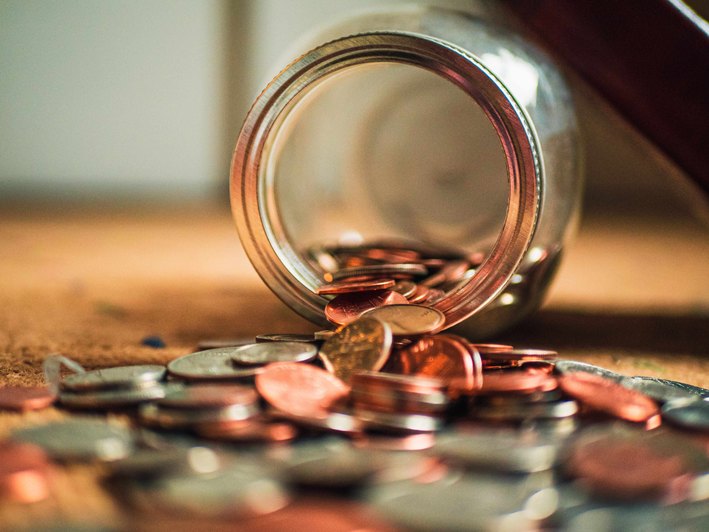

|
Picking the ideal apartment is a daunting task. You should start looking for the apartment at least 3 to 4 months before you decide to move in. You will need to pick an apartment with respect to the location and how long it takes to get to campus and/or work. You also hae to be careful not to be fool with deals. You have to make sure that rent and utilities bills are within your means. The commom mistake students often make is not reading the fine print. Yes they might be having a promotion where you either get the first rent free or half off but after that would you b able to afford the rent? Even if you are able to, are there better deals out there? You have to make sure that you look at multile otions and see which one is the best for you. |
Apartment Picking |
Living by your means |
By living by your means you should know how to limit purchases and practice responsible spending. The importance is knowing the difference between what you need and what you want. Having a set budget on what to spend each week without straying from it. There will be moments when you would want to and in those moments you have to make a decision whether to take the chance or to stick with the program. You know your situation better than anyone else, so make sure you make the decision and not someone else. Just remember you are responsible for youself, spending carelessly will result in only you suffering, so think of tomorrow not just today. |
|
Even if before deciding to leave for college you have fix your car, there are still the chances of something happening to it and you having to fix it. This is where the importance of having an emergency money come in handy/. It is also important to have a backup plan. You have to make sure that you knoe what bus to take to work or to school and their scheldule. You would have to make sure that leave enough time in between so you not be late. You also have to be prepare to take uber just in case your work let you out too late. Because in some cases it would be imposible to take the bus at night. While all that could last until the car get fix, but in rare cases where it would take longer or the car is too much hastle to fix, you will have to rearrange your entire work schedule around the bus schedule if possible. Because taking uber is only convinient in emergency situations, but if its something you would have to take constantly, it will drained you finacially. |
Tranportation
|